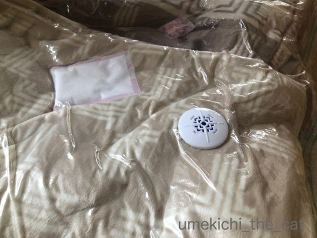
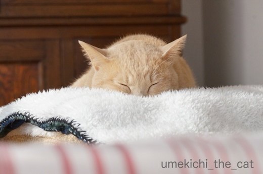
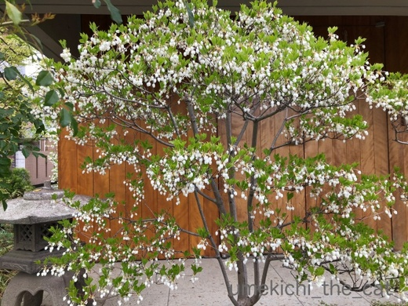
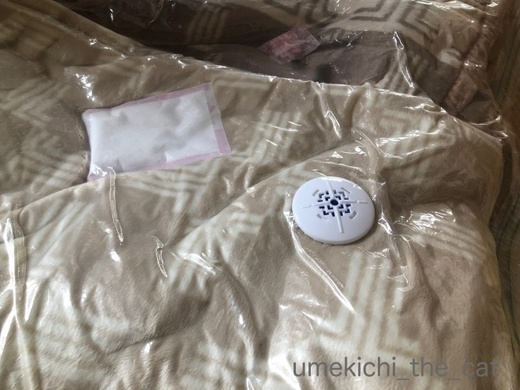
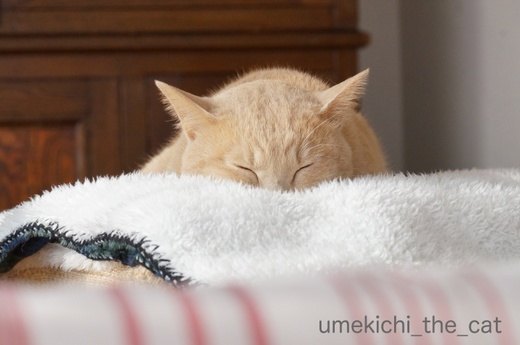
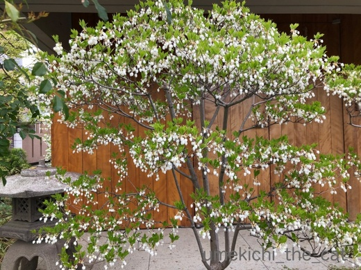

掃除機が許せなくなる時 [梅吉]
昨夜、今朝は肌寒かったので暖房を使ってしまった我が家ですが
そろそろ厚手の冬物をしまい始めております。

あまり収納スペースの無い家なので毛布はこんな風に掃除機を使って圧縮して
しまっているのですが作業がなかなかはかどりません。
みなさんご想像通り梅吉さんが熱心にお手伝いをしてくださるのが理由なのですが
そのお手伝いがですね、ちょっとすごいのですよ・・・・・
（21秒です）
![[猫]](https://blog.ss-blog.jp/_images_e/101.gif) そうじき！ゆるすまじ！！
そうじき！ゆるすまじ！！
・・・・・・(^▽^;)
普通に掃除機を使ってる分には絡んでくることは無いのですが
圧縮袋の吸い口を吸い始めるとこの勢い。
ちゃんと空気を抜くのが難しいです(-_-メ)
お昼寝爆睡中にこっそりしようと思っても飛び起きて駆けつけてくるし。
掃除機と圧縮袋のコラボの何がそんなに気に触るのでしょうねー。
お手伝いに精を出した後は日向でお昼寝。

季節が変わっておうちに入り込んでくる日差しの角度も変わってきました。

今時期は食卓テーブルの上にひざ掛けを置いてお休みどころにしています＾＾
 ↑ガブッと一押し↑
↑ガブッと一押し↑
ソメイヨシノがあっという間に葉桜になると
ハナミズキが満開！！
ツツジやサツキが咲き出して（両者の違いが良くわかりませぬ）

ドウダンツツジもこんなに咲いていました。
そろそろ厚手の冬物をしまい始めております。

あまり収納スペースの無い家なので毛布はこんな風に掃除機を使って圧縮して
しまっているのですが作業がなかなかはかどりません。
みなさんご想像通り梅吉さんが熱心にお手伝いをしてくださるのが理由なのですが
そのお手伝いがですね、ちょっとすごいのですよ・・・・・
（21秒です）
・・・・・・(^▽^;)
普通に掃除機を使ってる分には絡んでくることは無いのですが
圧縮袋の吸い口を吸い始めるとこの勢い。
ちゃんと空気を抜くのが難しいです(-_-メ)
お昼寝爆睡中にこっそりしようと思っても飛び起きて駆けつけてくるし。
掃除機と圧縮袋のコラボの何がそんなに気に触るのでしょうねー。
お手伝いに精を出した後は日向でお昼寝。

季節が変わっておうちに入り込んでくる日差しの角度も変わってきました。

今時期は食卓テーブルの上にひざ掛けを置いてお休みどころにしています＾＾
ソメイヨシノがあっという間に葉桜になると
ハナミズキが満開！！
ツツジやサツキが咲き出して（両者の違いが良くわかりませぬ）

ドウダンツツジもこんなに咲いていました。

カフェオレ色の梅吉

梅吉 2023年8月10日 永眠


梅吉と出会った譲渡会

犬猫の理由なき殺処分ゼロ
妄想広告
UMEKICHI 光

爆発的に早い！
時々攻撃的！
Thanks to Mr.Boss365
爆発的に早い！
時々攻撃的！
Thanks to Mr.Boss365

梅吉さんとしては自分のぬくぬく毛布を
片付けちゃう掃除機が許せないのでしょうか^^;
しかし、スゴイＦＩＧＨＴですねぇ(^O^)
やりきった感満載の寝顔が可愛い(^-^)
by ニッキー (2018-04-09 16:28)
絶対敵だと思ってますよ。やっつけなきゃならないのですね。(なんで?)
お昼寝のお顔は幸せ感に溢れてます。見てる方も幸せなひと時ですね。
by zombiekong (2018-04-09 16:47)
この動画には爆笑しちゃいました(^_^;)
敵視している理由が知りたいですね(^^)
幸せそうな寝顔には癒されました(^o^)丿
by middrinn (2018-04-09 17:03)
梅吉さん！すごいですねぇ～（笑
面白くて笑っちゃいますが・・・
片づけようとしても出来ないのは(;^_^A
でもたっぷり戦ってからの寝顔は
幸せそのものですね(#^.^#)
by きぃ (2018-04-09 17:25)
梅吉さん、バトル真剣ですねー！
布団の柔らかさを奪う空気泥棒掃除機許すまじ！？
片付けるのに時間かかるぅ＾＾；
お昼寝しているとこんなに悟ったように優しげなのに＾＾
急に暖かい日があったので、うちもツツジが咲き始めました。
最初に咲くのはツツジですよ～来月後半咲いていたら多分サツキ。
どっちにしてもお仲間です＾＾
by sana (2018-04-09 18:01)
梅吉さん、思い切り戦っていますね！
何が嫌いなんでしょう(^^)
by ma2ma2 (2018-04-09 18:01)
すごい！掃除機怖くないんだ!! 確かにこれじゃ片付かないですね。今年は圧縮しない袋で保管ください(*^_^*)
オリジナルソング？うわ～めっちゃきになるやん(^_^;)
by palpal (2018-04-09 18:26)
すごいお手伝いですね！
うちの猫ではないですが、先日エアコンカバーのペンキを塗っている時、「しょうちゃん」がお手伝いに来て困ってしまいました(^^;)
by kou (2018-04-09 19:28)
梅吉さんのお手伝い？のすごいこと（笑）
吸い込まれそうではありませんか？
これでは時間がいくらあっても足りませんね〜
今朝は、こちらは暖かかったのですよ。
お昼頃は、以外と寒くて風が強かったです。
春は花が次から次へと綺麗に咲きますね。
目の保養に良いです。
by kiki (2018-04-09 19:44)
梅吉さんたら 面白いねぇ♪
我が家のツツジ なんと！
今年は蕾が15個ほどついてるのですよ
この家に越してから23年
１度も咲かなかったツツジ
狂い咲き？
夫と笑ってます
でも蕾であって開花するかどうか？
まあ ほったらかしの庭ですから…
by ヨッシー (2018-04-09 19:49)
ものすごい勢いですね！
それより何より、掃除機を全く怖がらないのが
とても勇敢です！！
by yes_hama (2018-04-09 21:07)
梅吉さんは、容赦なしですね(^^;
遠慮しないんですね(^^;
あきれますね(^^;
こんな梅吉さんが好きです(^^)
by riverwalk (2018-04-09 21:45)
梅吉さん、でんぐり返しで最強のお手伝い^^;
掃除機を抹殺しようとしていますね～。
圧縮袋を吸い始めるとキュイ～ンと音が変わるのが許せないのでしょうか？！
戦いを終えたあとの充実したえびす顔の寝顔がキュートです(*^▽^*)
by ゆきち (2018-04-09 21:54)
梅吉さん掃除機退治の巻(@^▽^@)！
今年はドウダンツツジがやたらと元気
いっぱいな気がします。
by うりくま (2018-04-09 22:10)
うちは音にビビッて近寄ってこないので
こういう作業なら楽にできると思います。
梅吉さん、実は体を吸って欲しいとか（違うか）＾＾；
サツキはツツジの一種で
花や葉っぱが小さくて五月頃に咲くらしいです。
by ぽちの輔 (2018-04-10 07:02)
めっちゃ真剣に闘ってるしー(^_^;)
寝てる時との落差がすごいわ。
by よーちゃん (2018-04-10 07:53)
梅吉君、激しいｗｗｗ
普段の掃除機の音と変わるからなのかしら？(笑)
うみも、ドライヤーでモードを変えて音が変わると
猫パンチしてくるときあるｗ
「やめてよー」なんて言いながら、ちょっと楽しんじゃう自分もいます^m^
by リュカ (2018-04-10 09:32)
大好きなフカフカの布団を潰されるのが嫌なのかも(笑)
by 響 (2018-04-10 14:37)
ねんねしているにゃんこのおめめのライン・・・天使！
by Ginger (2018-04-10 15:57)
梅吉アターーーック！（* ゜∀ ゜*）
すごいですね、掃除機逃げないのですね。
もしかして吸われるのもOK？
仕事の後の一杯・・・じゃなかった、ひと眠りが満足フェイスですね。
by Ja-Kou66 (2018-04-11 01:04)
ニッキーさん＞
梅吉のこういう時の根性というか執念というか
常々見習いたいと思っております。
決してあきらめない、ひるまない・・・www
強いものに立ち向かう！でも掃除機、みたいな(*>艸<)
zombiekongさん＞
そう！やっつけなきゃいけないんですよねw
でも掃除機やっつけられたら困るんですけどー(*>艸<)
起きてわーわー付きまとってくると
「寝てくれないかな」と思っちゃうのですが
こんな寝顔しているとついつい構ってしまいますwww
middrinnさん＞
掃除機は稼働しているので
当然体のあちこちを吸い込まれているのですが・・・
それでも溢れ出る闘争心の方が勝っているようで
食らいついてくるのですよー(*>艸<)
もし梅吉と会話ができて理由が聞けても
「はぁ？」と理解できないことを言うに違いないですwww
きぃさん＞
ホント、進まないのですよ！片付けが！！
絡んでこない時は寝ていてくれれば良いのに
私がばたばたしているところから少しだけ離れて
構ってほしそうに「じーっ」と視線を送ってくるし(^▽^;)
そんな姿を見たらついつい構ってしまって・・・w
sanaさん＞
掃除機が吸い口から出す「きゅいーん」という音が
毛布の断末魔の叫びに聞こえるんでしょうか。
「たすけなあかん」という正義感！？
今咲いているのはツツジなのですねー。
来月後半にはサツキっと_φ(･_･
ma2ma2さん＞
梅吉、ナイス・ファイト！でしょう＾＾
でも掃除機相手はやめてーですwww
palpalさん＞
ねー。掃除機怖がって欲しいですよ。ホントに(-_-メ)
今の所中途半端に空気が抜けた状態ですが
隙を見て空気抜くわ！しまう場所ないものー！！
オリジナルソングはそのうちYou Tubeにアップ、しません！
恥ずかしいわ・・・(〃▽〃)
kouさん＞
しょうちゃんもやりますねー＾＾
自宅の猫なら拉致して閉じ込めちゃえますが
よそのお宅の子ならそうもいかず・・・(^▽^;)
エアコンカバーに肉球印押されませんでしたか？（笑）
kikiさん＞
吸い込まれているんですよー。顔やら胸やら(^▽^;)
なので換毛期には時々掃除機を弱くして体を吸っているのですが
(初めは黙っていますが途中から怒るw）
そんなことするから掃除機に絡んでくるのかもしれませんw
お散歩の目標を「◯◯の花」に設定するのも
楽しいかもしれませんね＾＾
ヨッシーさん＞
梅吉は本当に個性のある面白い子で・・・
次に何をしてくれるか飼い主も楽しみです＾＾
苦節２３年のツツジ、ようやく蕾が！？
今春の若干異常な気象が気に入ったのでしょうか。
今日は生暖かい強風が吹いていますが
蕾が飛んじゃったりしませんように！！
by ちぃ (2018-04-11 17:40)
yes_hamaさん＞
梅吉は怖いものがあまりなくて・・・
脅かしの効かない子なんですー。
勇敢というか向こう見ずというか (^▽^;)
せめて火は怖がって欲しいのですが、平気w
ガードするのが大変です (-_-メ)
riverwalkさん＞
梅吉の魅力をわかっていただいて嬉しいです＾＾
もう、ここまでされると怒る気にもならず
あきれちゃってひたすら可愛いです(〃▽〃)
ゆきちさん＞
わざわざでんぐり返るのはなんの意味があるのかも
気になるところなんです(*>艸<)
攻撃の威力でも増すんでしょうかねーw(本にゃん比）
あの、超音波みたいな音が嫌なのもあるかもしれませんね。
だったら逃げて欲しいのですけど・・・・・
そこをあえて戦うのが梅吉www
うりくまさん＞
掃除機退治されたら困りまする・・・(＠◇＠)
今年の寒暖差のあるピリッとした春の天気は
ドウダンツツジ向きだったのでしょうか。
でも我が家の盆栽のドウダンツツジは
蕾もつけておりません・・・なんでだ！！
ぽちの輔さん＞
ギクっ！実は換毛期には掃除機で吸っています・・・ (^▽^;)
初めは黙っているのですがそのうちお怒りになるのですがw
それもあるので余計に掃除機許すまじ、なのかもしれません！
サツキは葉っぱが小さめ・・・_φ(･_･
今度じっくり見てみます！！
by ちぃ (2018-04-11 18:02)
よーちゃん＞
なんでこんなに真剣に組みついてくるのか
よくわかりませんー(^▽^;)
まあ、元気な証拠ということで♪
リュカさん＞
うみちゃんが猫パンチしてくるなんてちょっと意外！
でも、梅吉と違ってかわいいパンチに違いないわw
圧縮作業がはかどらなくて困るんだけど
面白くてわざとに何度もやったりしてまーす(*>艸<)
動画撮っている時点で真剣に困っていないのバレバレだしwww
響さん＞
フカフカが圧縮されていく様を見て季節を惜しむ梅吉・・・
そして、ケリケリがぶー(*>艸<)
私も季節の風物詩として実は楽しんでいます＾＾
Gingerさん＞
寝ている時は本当に天使のようなのに・・・
いえいえ、起きてけりけりがぶがぶしてても天使です！！
Ja-Kou66さん＞
掃除機は全く怖がりません！体を吸ってもOK！
途中でお怒りになりますが・・・・・ (^▽^;)
おとなしく寝てくれるとホッとするのですが
寝顔を見ているとついつい構いたくなっちゃいます！！
by ちぃ (2018-04-12 14:07)